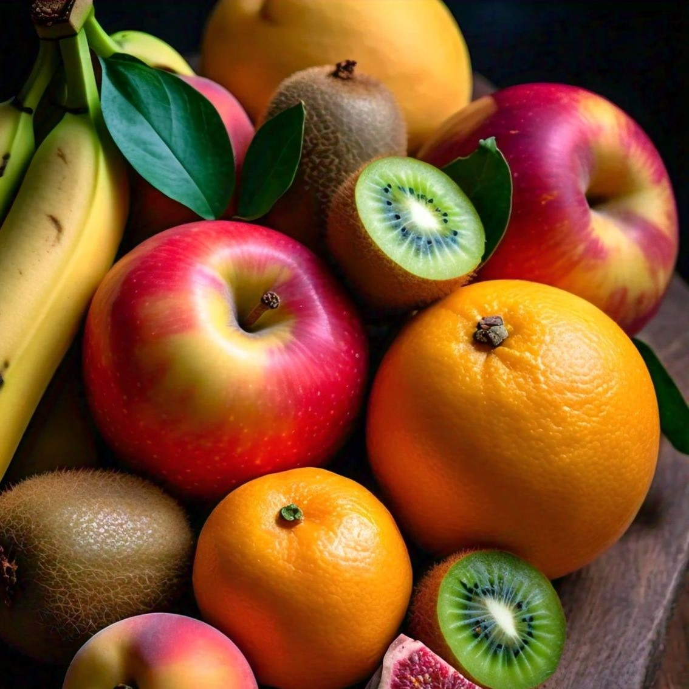

Nuestros Helados

Helado de Banana
Bananas frescas y naturales, sin conservantes.

Helado de Naranja
Naranjas frescas y jugosas, una explosión de vitamina C.

Helado de Manzana
Manzanas crocantes, sin ningún aditivo artificial.

Helado de Kiwi
Kiwis naturales, refrescantes y saludables.
Helado de Durazno
Duraznos jugosos, un sabor que no olvidarás.

Helado de Mix Frutal
La mezcla perfecta de frutas frescas para una explosión de sabor.